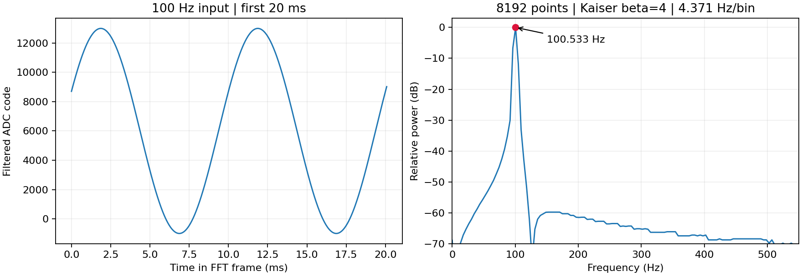

2026-10-17 更新：main TX 默认已对齐实验1：38–42 kHz、20 ms、幅度0.25、TX滤波旁路。RX/FFT未修改。参数/启动和短顶层回归通过；新编译84项时序全过，最小余量 +0.013 ns。下方FFT图表和长帧证据保留自更新前的集成验证；最新SOF来源见 本次记录、新时序、本次证据。尚未实板验证。
原 main 集成验证记录：RTL分层测试、PC解析及84项静态时序检查通过；最小余量 +0.009 ns。当前main版本尚未进行实板测试。
ADC 约1.145833 MS/s保持不变；main数字低通抽取/32后为35.807292 kS/s。8192点覆盖约228.78 ms，频率格间隔4.371007 Hz。点数与采样率同时增加4倍，观察时间及频率格间隔不变。

| 输入Hz | 峰值Hz | 误差Hz | bin | flags |
|---|---|---|---|---|
| 25 | 26.226044 | +1.226044 | 6 | 0 |
| 100 | 100.533168 | +0.533168 | 23 | 0 |
| 500 | 498.294830 | -1.705170 | 114 | 0 |
| 250 | 249.147415 | -0.852585 | 57 | 0 |
| 99.6 | 100.533168 | +0.933168 | 23 | 0 |
| 75 | 74.307124 | -0.692876 | 17 | 36 |
case 250 Hz叠加弱700 Hz；99.6 Hz叠加采样频率附近的带外信号；75 Hz为削顶测试，flags=36提示ADC/去直流削顶，其频率值不作为正常结果通过。另验证了短输入和空输入的拒绝、连续帧、逐点整数参考FFT及NumPy复数频谱比较。
长帧输入保留286,458个模拟ADC采样；原始波形每4点保留1点，共71,614点；完整回传143,356字节（原波形包及M1记录）。逐点比对与参考功率、峰值检查见system_checks.json。真实UART短测试覆盖原触发命令和64字节M1报文；ADC桥测试覆盖缓存限长、削顶、独立FFT数据及下一帧清除。
长帧验证压缩ADC空闲节拍和UART位等待，TX数值输出、参数浮点延迟及温度传感器使用模型。短ADC SPI测试保留引脚节拍和Intel内存模型；长帧测试使用Intel FFT内存与等延迟的行为波形缓存；多频点数值回归使用行为内存。不能将这些结果描述为完整250ms真实节拍端到端仿真或实板通过。当前面向连续低频发生器输入；真实混频信号须有足够长的有效重叠时间。